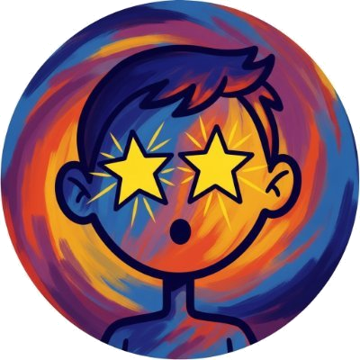

AUTHOR · 作者
关于作者
水


「谁是专家」
让 AI 把一个值得表达的思想，用现代中文说得清楚、自然、漂亮、亲近，而且有分量。不做「去AI味」——追求真正的表达质量。
一个工具的边界，就是它的立场。辞达对五类流行做法说不。
工整、分点、逻辑清楚不是 AI 的专利，而是好写作的基本功。辞达优化的是可读性、对话感、节奏与思想密度本身。
不做 AI 检测对抗。目标不是「让人看不出是 AI 写的」，而是让文字值得被读完。
不随机加错别字、不故意插口误。像人 ≠ 不完美——高质量的人类写作本来就可以整洁、有结构、精确。
没有「董卿风」「白岩松风」。辞达只抽取可迁移的表达机制，从不复制在世作者的语言指纹。
「其实」「所以」「值得注意的是」——每个词只看它有没有真实的话语功能，不看它是否「高频」。
不输出「AI 味 87%」。诊断只给具体、有证据、可修复的问题清单。
每一次重写、每一处取舍，都由这组原则裁决。
轻诊断、直接改。适合短文本与明确场景，几分钟内拿到更好的版本。
完整十项诊断后按 P0→P4 重建：先修意义与逻辑，再调结构，最后才是语言。
每一处修改附理由与机制依据——不是黑箱润色，是可学习的表达课。
从你的真实文本抽取风格参数，形成个人文体档案。学参数，不抄句子。
十个维度定位任何一篇文本。以下为辞达默认文体 Profile——「现代中文高质量对话型」。
参数映射的是一组语言行为的概率与策略——较高口语感意味着更自然的话题转换、更多读者预期回应、允许短句与适量话语标记，而不是「每段加一个其实」。
Theory explains Corpus. Corpus corrects Theory. 双向蒸馏为可迁移的话语机制节点。
适配只调整呈现层——逻辑、判断、证据在任何平台不打折。
纯提示词工程 + 文件结构，不依赖任何私有 API。支持 Claude Code、Codex、OpenCode 等主流 harness。
